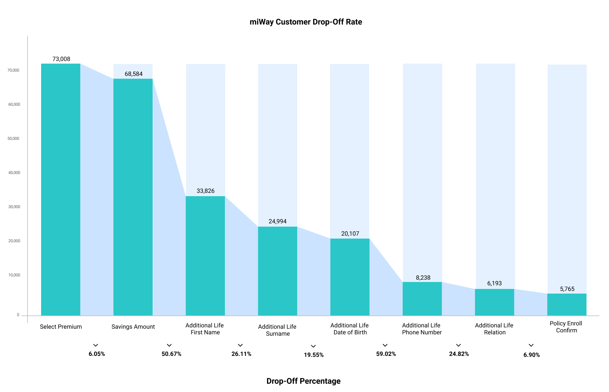

The aim of the project was to conduct research to identify and validate the root causes of premium collection issues. Our main goal was to design an optimized premium collection service and a self-service payment system that addressed customers' main pain points. The existing product experienced a rising drop-off rate and consumed about 15% of call center time due to frequent customer complaints. To address this, we collaborated closely with call center supervisors, managers, and members of the CXLaunchpad—an initiative by LeapFrog focused on building customer experience capabilities within companies. This collaborative approach allowed us to co-create effective solutions that streamlined the payment process and improved customer satisfaction.
Over 50% of potential customers drop after reaching the Optional Savings screen on USSD. A further 59% drop upon reaching the Selected Family Member Date of Birth screen.
Interviews were conducted with 8 call center supervisors and agents to understand what they perceived the problem with the premium collection was. A survey was also created and data was collected in the form of an interview with 112 random customers to observe their mobile money usage habits and their understanding of the collection runs.
An auditing and testing round with current and new users was conducted to ascertain usability issues with the existing product. Data on incomplete sign-ups was also collected from the system's backend.
Users misunderstood the screen as a separate monthly payment instead of additional savings to their premium.
Adding Savings to their premium amount appeared out of context since the product introduced to them was that of insurance.
Users were unsure of how to reply in order to move to the next step.
Users were skeptical since the Savings amount did not come with interest.
Users misunderstood who an additional life was and why they needed to strictly be a biological family member.
User were unsure of 'who' to add as the additional life or their details such as 'date of birth' and 'contact details'.
Users did not understand the policy and why they needed to add one.
Started sign-up process due to curiosity.
Long sign-up process than it should be in their opinion.
Deferment of Savings Option and Additional Life Steps to make the process sign-up process less cumbersome. An SMS would be sent two (2) working days after sign-up to remind subscribers to fill in the details for the deferred screens.
'3 Thing you Should Know' option on the onboarding screen to explain the product to users any time they visit the platform through USSD code (#165).
An option to totally 'skip' the Savings Option step during the sign-up process.
Changes in the verbiage used across screens to make the wording SIMPLE and easily understandable.
Send Customers who missed their payment a link via SMS to execute a one-time payment.
Collection run should be triggered automatically not manually.
Collection run should be triggered from the 24th of the month through to the 1st of the following month instead of the current collection run on the 20th of each month.
A final testing conducted with some users showed that users had a better understanding of what the product is about and requested for further features.
"The process is understandable, there is no need to defer the screens."
"The wording is very understandable and easy to follow."
"I do not want to add a savings amount, I want to concentrate on the insurance policy."
"There should be more options for biological family member, what about my adopted kids? What if I don't have any biological family member?"